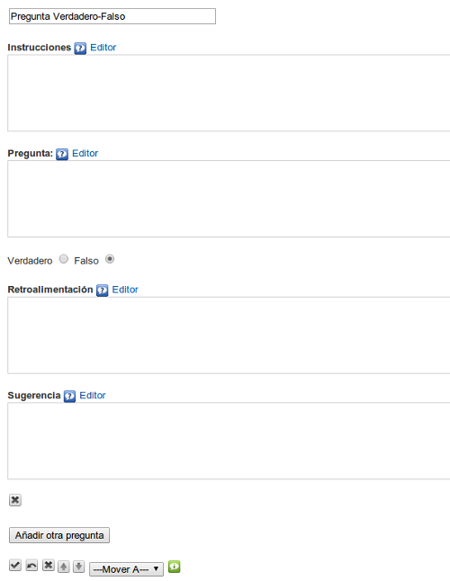

Utilizaremos este iDevice para proponer una (o varias) preguntas que deberán ser respondidas con "Verdadero" o "Falso". Nos permite introducir varios tipos de retroalimentaciones que serán visualizadas por el alumno una vez completadas las actividades o como pistas para realizarlas. Este tipo de actividad facilitará que el alumno pueda comprobar por sí mismo la asimilación de los contenidos trabajados.
Al seleccionar el iDevice "Pregunta verdadero falso" del listado de iDevices se nos mostrará lo siguiente en nuestro eXeLearning:

En la parte superior, tendremos la posibilidad de modificar el título del iDevice.
En el campo "Instrucciones" escribiremos el texto con las instrucciones a seguir para realizar la pregunta Verdadero / Falso.
En el campo "Pregunta" escribiremos el texto de la pregunta. El enunciado deberá ser claro. Evitaremos premisas negativas ya que tienden a ser ambiguas.
Determinaremos si el enunciado que hemos escrito es Verdadero o Falso, marcando la casilla correspondiente
En el campo "Retroalimentación" escribiremos la retroalimentación que queremos que vean los lectores después de haber realizado la actividad. Si dejamos el campo vacío se ofrecerá la retroalimentación por defecto.
En el campo "Sugerencia" podremos proporcionar alguna pista que ayude al estudiante a contestar correctamente la pregunta. Podremos dejar el campo en blanco.
Podremos añadir nuevas preguntas en el iDevice pulsando el botón "Añadir otra pregunta".
Recuerda:
Lo más importante de las preguntas en eXeLearning es cómo las utilizamos.
- Al plantear un caso podemos hacer preguntas que generen dudas
- Podemos poner preguntas junto a un vídeo para relacionarlo con los objetivos de la materia
- Al cerrar un contenido podemos hacer preguntas que refuercen las ideas clave
No es tan importante acertar o fallar la pregunta; es más importante la explicación asociada a la respuesta.